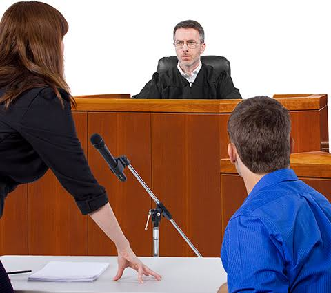
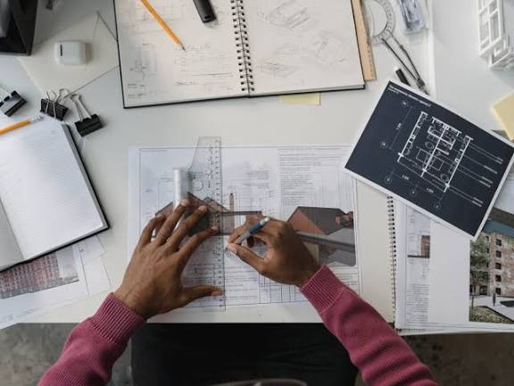
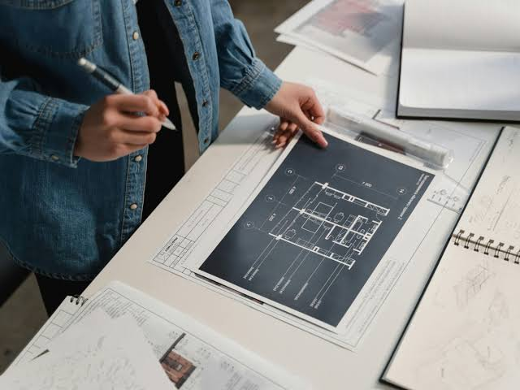

SERVICIOS DE DENISSE ARELLANO
servicios
DEFENSA DE CASOS PENALES

Analizo los hechos y posibles delitos reviso pruebas testimonios
CARACTERISTICAS

Características principales
Debido proceso: el procedimiento debe respetar las garantías y derechos establecidos por la ley Análisis de pruebas: la defensa examina las pruebas presentadas para detectar errores, contradicciones o falta de sustento Estrategia jurídica: se establece una teoría del caso y se seleccionan los argumentos más adecuados.
QUE SERVIVIOS OFRECE
caracteristicas principales
Brinda cuidado físico y emocional Defensa y representación ante Fiscalía y tribunales Asesoría desde la etapa de investigació Preparación y presentación de escritos y recursos Representación en audiencias Defensa durante el juicio penal Solicitud de medidas cautelares o alternativas Apelaciones y otros recursos
SERVICIOS DE DYLAN GAMBOA
servicios
arquitectura
Analizo los problemas de una contrucion y hacemos un analisis y vemos si no tiene falla en la estructura
CARACTERISTICAS

Características principales
creativdad de diseño bueno en las matematicas imaginativo para crear y soluciones.
QUE SERVIVIOS OFRECE

caracteristicas principales
Brinda una perfecta estructura diseño de edifios planificacion de espacios elaboracion de planos asesoria en construir diseño de interiores y exteriores supervison de obras remodelacion de espacios